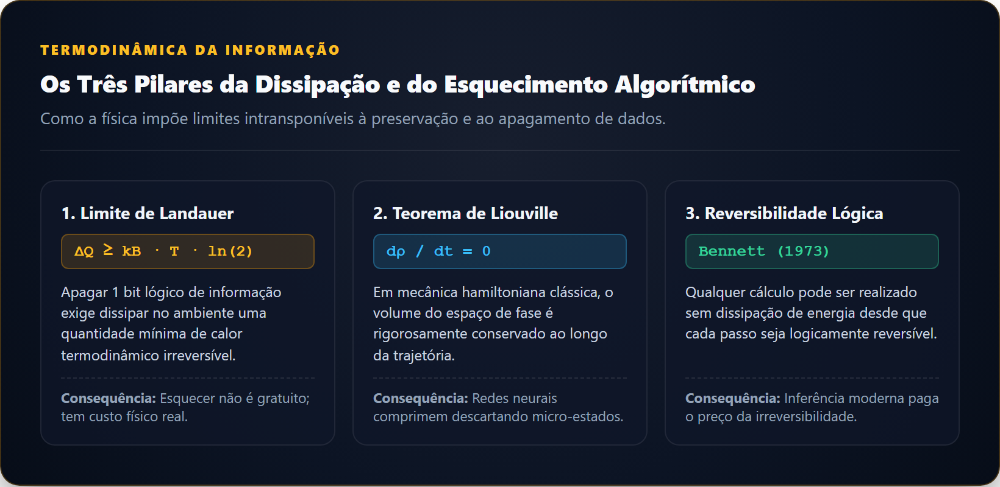

Todos os modelos estão errados, mas alguns são úteis.
— George E. P. Box, Science and Statistics (1976)
Sumário
- Introdução: Nenhum Modelo Contém o Mundo
- O Ato de Escolher um Estado já é um Ato de Esquecimento
- Coarse-Graining: Transformar Muitos Detalhes em Poucos Números
- Linearização: Esquecer a Curvatura Local
- De Navier-Stokes a Derivadas de Estabilidade: Uma Cadeia de Compressões
- Quando o Passado Foi Esquecido: Inflow, Esteiras e Estados Ocultos
- Redução de Ordem: Encontrar as Coordenadas que Carregam a Dinâmica
- Surrogates e Digital Twins: Quando o Modelo do Modelo Vira Ferramenta
- O Paradoxo da Validação: Como Confiar Onde Não Medimos?
- Hume Entra no Simulador
- Erro de Modelo: A Incerteza que Não Cabe na Distribuição
- A Compressão Ótima Depende da Pergunta
- Conclusão: Compreender é Esquecer com Disciplina
Introdução: Nenhum Modelo Contém o Mundo
Em um conto célebre de um único parágrafo intitulado Del rigor en la ciencia, o escritor argentino Jorge Luis Borges [1] narra a ruína de um império cuja corporação de cartógrafos atingiu tal perfeição técnica que produziu um mapa do império cuja escala era de um para um, coincidindo ponto por ponto com o território real. As gerações seguintes perceberam a inutilidade daquela obra colossal: consultar o mapa exigia caminhar sobre uma superfície idêntica ao próprio solo. A relíquia foi abandonada às intempéries dos desertos ocidentais, desfazendo-se em frangalhos de pergaminho sob o sol e o inverno.
A fábula borgesiana expressa a condição primeira de qualquer esforço científico e de engenharia. Um modelo que tentasse conter a totalidade da realidade não seria um modelo. Seria apenas uma duplicação inútil do universo, compartilhando todas as dificuldades operacionais do objeto original.
Considere três representações distintas de uma mesma aeronave de transporte comercial estacionada em um hangar. Para a equipe de aeroelasticidade e integridade estrutural, a aeronave é uma malha tridimensional de elementos finitos contendo dezenas de milhões de nós mecânicos que descrevem a flexibilidade das longarinas, a espessura dos painéis e as tensões locais sob turbulência. Para a equipe encarregada de projetar o piloto automático de atitude, a aeronave é um sistema dinâmico rígido de seis graus de liberdade, reduzido a um vetor compacto de doze estados acoplados por derivadas aerodinâmicas. Para o despachante de voo calculando o plano de abastecimento entre dois continentes, o avião colapsa em uma tabela tabular de consumo e uma curva polar de arrasto que relaciona peso, altitude e velocidade.
Cada uma dessas representações é verdadeira em um sentido operacional rigoroso. Nenhuma delas é completa. Todas operam mediante um ato prévio de amputação deliberada.
Modelar a natureza é uma atividade de compressão seletiva de informação [3]. Um modelo físico não triunfa porque descreve tudo o que acontece, mas porque descarta com precisão matemática tudo aquilo que não altera a resposta para uma pergunta específica. O erro perigoso na ciência aplicada nunca reside no ato de esquecer, pois sem esquecimento o cálculo é impossível. O erro reside em esquecer um mecanismo físico que, sob condições não testadas, volta a governar o comportamento do sistema.
Compressão de Estados em Três Escalas
Três descrições da mesma máquina revelam resoluções físicas distintas para finalidades complementares:
- Malha estrutural completa: \(10^7\) graus de liberdade. Calcula flambagem, fadiga e concentração de tensões locais. É intratável para simulações de trajetória temporal em tempo real.
- Dinâmica de corpo rígido (6-DOF): 12 variáveis de estado. Resolve estabilidade de atitude, amortecimento de modos e leis de controle de voo. Descarta a deformação elástica dos membros.
- Equações de energia e performance pontual: 3 variáveis macroscópicas. Determina alcance de cruzeiro, teto de serviço e consumo de combustível.
O Ato de Escolher um Estado já é um Ato de Esquecimento

Figura 1. Limite de Landauer, Teorema de Liouville e a Computação Reversível de Bennett: os fundamentos termodinâmicos da perda de informação.
A redução dimensional de um sistema físico não tem início quando escrevemos um algoritmo numérico em um computador. Ela começa no instante teórico em que decidimos quais grandezas merecem compor o vetor de estado.
Na mecânica de voo tradicional, a evolução de uma aeronave é formalizada por um vetor de variáveis \(x = [u, v, w, p, q, r, \phi, \theta, \psi, x_E, y_E, z_E]^T\), registrando velocidades translacionais, velocidades angulares e orientações no espaço [11]. No momento em que essa escolha é fixada no papel, bilhões de graus de liberdade da matéria real são ativamente descartados. O modelo ignora as oscilações de flexão da ponta da asa, as flutuações de vórtices microscópicos nas fendas dos flaps, a temperatura do fluido nos atuadores hidráulicos e a vibração acústica no interior da cabine.
A adoção de um vetor de estado discreto traduz uma aposta informacional sobre a memória do sistema. Na linguagem da matemática de sistemas dinâmicos, assume-se que o vetor escolhido é suficientemente informativo para que o estado futuro dependa unicamente do estado presente. Essa propriedade, conhecida como markovianidade efetiva, estabelece que todo o histórico passado do avião foi sintetizado nos números que compõem \(x\) neste exato instante.
Essa hipótese nem sempre resiste ao contato com regimes severos. Quando o sistema físico retém memória de estados anteriores que foram banidos do modelo simplificado, essa dinâmica esquecida não evapora no ar. Ela reaparece nas observações experimentais como anomalias não explicadas: atrasos de fase imprevistos entre comando e resposta, ciclos-limite, histerese aerodinâmica ou distúrbios que os engenheiros chamam genericamente de ruído de processo. A aparente aleatoriedade de uma medição física é, com frequência, a assinatura determinística de um estado que decidimos não enxergar.
Evidência
A Memória Oculta da Aerodinâmica Não-Estacionária
Em manobras rápidas de elevação de ângulo de ataque próximo ao estol, o coeficiente de sustentação de um perfil aerodinâmico não segue a mesma curva durante a subida e a descida do comando. Ele descreve um laço aberto de histerese. Se o modelo considerar a sustentação como uma função puramente instantânea do ângulo de ataque estático, o erro de predição de forças pode superar 40% durante o ciclo. O fluxo de ar descolado retém memória da esteira que exige estados adicionais de dinâmica de vórtices para ser restaurada.
Coarse-Graining: Transformar Muitos Detalhes em Poucos Números
O processo pelo qual a física transforma multidões de variáveis microscópicas em um punhado de grandezas macroscópicas utilizáveis atende pelo nome de coarse-graining (granulação grossa). Esse procedimento é o alicerce silencioso que separa a física teórica da computação insolúvel.
Considere a atmosfera através da qual voa uma aeronave. Um único metro cúbico de ar ao nível do mar contém aproximadamente \(2{,}5 \times 10^{25}\) moléculas de nitrogênio e oxigênio colidindo em velocidades de centenas de metros por segundo. Rastrear individualmente a posição e o momento de cada molécula segundo as leis de Newton exigiria um computador cuja memória excederia toda a matéria conhecida do planeta.
No entanto, a mecânica dos fluidos e a termodinâmica operam com apenas cinco campos contínuos expressos nas equações de Navier-Stokes: densidade \(\rho\), temperatura \(T\) e as três componentes do vetor de velocidade macroscópica \(\mathbf{v}\). A pressão não é uma propriedade de uma molécula individual, mas a média estatística da taxa de transferência de momento linear provocada por sextilhões de choques microscópicos contra uma superfície.
O coarse-graining funciona porque muitas configurações moleculares distintas (microestados) produzem exatamente o mesmo comportamento térmico e de pressão (macroestado). As minúcias individuais de onde cada molécula se encontra colapsam em invariantes estatísticos.
A lição epistemológica é profunda: as leis efetivas que governam o macrocosmos não são muletas precárias decorrentes de nossa limitação computacional. Elas são a única forma sob a qual a física se torna inteligível. Saber a posição de cada elétron na asa de um avião não apenas é impossível, como não acrescentaria nenhum conhecimento relevante para quem deseja calcular a sustentação que equilibra o peso da aeronave.
Linearização: Esquecer a Curvatura Local
Se o coarse-graining remove as partículas para produzir equações diferenciais contínuas, a linearização executa a etapa seguinte de compactação matemática: ela descarta as curvaturas das funções para transformar relações não lineares em matrizes algébricas tratáveis.
Considere uma equação diferencial geral não linear que descreve as forças e momentos que atuam em um corpo:
\[\dot{x} = f(x, u)\]
onde \(x\) é o estado e \(u\) representa os comandos dos atuadores. Ao definir uma condição de equilíbrio ou voo nivelado trimado \((x_0, u_0)\) tal que \(f(x_0, u_0) = 0\), podemos expandir a função em uma série de Taylor em torno desse ponto de operação:
\[f(x_0 + \delta x, u_0 + \delta u) = f(x_0, u_0) + \left.\frac{\partial f}{\partial x}\right|_{0}\delta x + \left.\frac{\partial f}{\partial u}\right|_{0}\delta u + \mathcal{O}(\|\delta x\|^2, \|\delta u\|^2)\]
A linearização consiste na decisão formal de descartar os termos de ordem superior representados por \(\mathcal{O}(\delta^2)\). O comportamento local passa a ser governado por matrizes constantes:
\[\delta\dot{x} = A \delta x + B \delta u\]
onde \(A\) é a matriz Jacobiana de derivadas de estabilidade e \(B\) é a matriz de controle.
Essa aproximação é uma obra-prima de economia analítica. Ao descartar as curvaturas locais, o engenheiro ganha acesso imediato ao universo da álgebra linear: autovalores que revelam se os modos naturais de oscilação amortecem ou divergem, frequências naturais de resposta e matrizes de controlabilidade.
O risco reside na fronteira da aproximação. A linearização preserva fielmente a reta tangente ao ponto de operação, mas torna-se cega conforme o vetor de perturbação se afasta do ponto de trimagem. Perto de limites físicos como separação de camada limite, estol aerodinâmico ou saturação de deflexão de leme, a curvatura descartada deixa de ser uma pequena correção numérica e passa a governar bifurcações dinâmicas severas [12].
Experimento Mental
O Vale Parabólico e a Rampa de Escape
Imagine uma esfera rolando no fundo de uma bacia parabólica profunda.
Perto do centro da bacia, o fundo parece plano ou perfeitamente linear, comportando-se como um oscilador harmônico ideal onde o período de oscilação é constante, independente da amplitude. O modelo linearizado prevê que a esfera oscilará para sempre dentro do vale seguro.
Se a esfera for submetida a um empurrão que a leve até a borda da bacia, onde as paredes se curvam para baixo em uma rampa íngreme, o modelo linearizado continuará afirmando que a força restauradora puxa a esfera de volta. No mundo real, os termos quadráticos dominam, a esfera escapa pela borda e despenca no abismo.
De Navier-Stokes a Derivadas de Estabilidade: Uma Cadeia de Compressões
O caminho percorrido pelo projeto de uma aeronave moderna ilustra uma verdadeira pirâmide de compressão informacional, na qual terabytes de dados espaciais são sucessivamente refinados até se tornarem um punhado de coeficientes escalares.
No topo da cadeia de fidelidade, a simulação computacional de dinâmica dos fluidos computacional (CFD) resolve as equações de Navier-Stokes médias de Reynolds (RANS) em malhas volumétricas que ultrapassam cem milhões de células poliédricas. Cada iteração do solucionador calcula campos distribuídos de velocidade tridimensional, tensões viscosas, pressão estática e energia cinética turbulenta ao redor de toda a fuselagem.
Essa torrente de dados espaciais seria inútil se fosse injetada diretamente no simulador de voo ou na arquitetura de comando de superfícies. O cálculo de um único segundo de escoamento em malha fina pode consumir centenas de horas em supercomputadores paralelos.
Para torná-la acionável, a engenharia aplica operações sucessivas de integração. Os campos contínuos de pressão e cisalhamento são integrados sobre a superfície da asa, gerando forças e momentos resultantes concentrados. Essas forças são divididas pela pressão dinâmica e pela área de referência, gerando coeficientes adimensionais escalares. Em seguida, perturbações numéricas em torno do ponto de operação produzem derivadas adimensionais como \(C_{m_\alpha}\) e \(C_{m_q}\). Por fim, essas derivadas alimentam as matrizes do espaço de estados, onde cada coeficiente sintetiza o comportamento aerodinâmico médio de uma asa inteira.
A cada degrau dessa escada, bilhões de números são descartados em troca de velocidade computacional, clareza causal e interpretabilidade matemática. O ganho é evidente: um piloto ou um sistema fly-by-wire pode operar em tempo real a centenas de hertz. A perda é simétrica: detalhamentos locais, descolamentos parciais de esteira e interações aerodinâmicas não lineares deixam de existir na representação simplificada.
Quando o Passado Foi Esquecido: Inflow, Esteiras e Estados Ocultos
A mecânica de rotores de helicópteros e aeronaves de asas rotativas oferece um estudo de caso esclarecedor sobre o perigo de esquecer a memória do fluido circundante.
Nos primórdios da teoria de helicópteros, utilizava-se a teoria de quantidade de movimento elementar combinada com a teoria do elemento de pá, assumindo que a velocidade induzida que atravessa o disco do rotor (o chamado inflow) respondia de forma instantânea às mudanças de passo das pás. Esse modelo partia da premissa de que a massa de ar não possuía inércia dinâmica apreciável, operando em regime quase-estacionário.
Quando esses modelos foram testados em manobras dinâmicas rápidas ou acoplados a sistemas automáticos de controle de voo, a aeronave real frequentemente apresentava instabilidades severas, tendências a oscilações induzidas pelo piloto e atrasos acentuados de resposta no eixo de arfagem e rolamento.
A razão física do erro residia no esquecimento da esteira de vórtices. Um rotor em funcionamento carrega consigo uma coluna descendente de ar em movimento acelerado contendo grande energia cinética e momento linear. Quando o piloto puxa subitamente o comando de passo coletivo ou cíclico, as pás alteram a sustentação em milissegundos, mas a coluna de esteira sob o rotor leva tempo apreciável para ser acelerada ou defletida. Essa esteira empurrada retém a memória aerodinâmica das manobras passadas.
A solução teórica formulada por David Peters e colaboradores [6] consistiu na criação dos modelos de inflow dinâmico. A única maneira de restaurar a fidelidade do modelo foi admitir que a velocidade induzida não é uma função estática de entrada, mas ela própria uma variável de estado dinâmica independente dotada de sua própria equação diferencial de primeira ordem:
\[\tau \dot{\lambda} + \lambda = C_T\]
onde \(\lambda\) é o inflow induzido, \(\tau\) é a constante de tempo da esteira e \(C_T\) é o coeficiente de tração instantâneo. Ao reinjetar estados de inflow no vetor de estado da aeronave, a inércia esquecida do ar retornou ao modelo, e os atrasos de fase observados nos testes de voo foram reproduzidos com fidelidade.
Um modelo estático sem memória só é admissível quando o tempo característico de relaxação das variáveis descartadas é ordens de grandeza menor do que a dinâmica do fenômeno que desejamos controlar. Quando o ambiente relaxa lentamente, ignorar seus estados internos equivale a pilotar às cegas.
Redução de Ordem: Encontrar as Coordenadas que Carregam a Dinâmica
Nas últimas décadas, a engenharia computacional deixou de depender exclusivamente da intuição humana para simplificar modelos. Desenvolveram-se métodos matemáticos automatizados capazes de inspecionar simulações gigantescas de alta fidelidade e descobrir, por métodos analíticos, as coordenadas dominantes que concentram a maior parte da física do problema. Esse campo atende pelo nome de redução de ordem de modelos (ROM).
Entre as técnicas mais consolidadas destaca-se a Decomposição Ortogonal Própria (POD), introduzida no estudo de turbulência por Lawrence Sirovich [7]. O método analisa uma série temporal de fotografias instantâneas (snapshots) de um campo vetorial de alta dimensão gerado por CFD ou experimentos óticos. Por meio de uma decomposição em valores singulares, o algoritmo calcula funções de base espacial ortogonais que maximizam a captura da energia cinética média do escoamento.
Com frequência, uma simulação de escoamento turbulento ao redor de um aerofólio envolvendo milhões de graus de liberdade revela que apenas quatro ou cinco modos espaciais concentram mais de 90% da energia flutuante do sistema. O modelo reduzido projeta as equações originais de Navier-Stokes sobre esse subespaço de baixa dimensão através de uma projeção de Galerkin, convertendo equações diferenciais parciais intratáveis em um conjunto de equações diferenciais ordinárias compactas.
Mais recentemente, a teoria de operadores de Koopman e métodos de decomposição dinâmica de modos (DMD) levaram essa filosofia além, buscando mapear dinâmicas não lineares complexas em representações lineares globais sobre espaços funcionais de dimensão infinita, aproximados por matrizes de modos coerentes [10].
Contudo, a redução matemática traz uma armadilha sutil. Uma compressão que maximiza energia cinética não maximiza necessariamente causalidade ou sensibilidade de controle. Em dinâmica de fluidos, um modo de vórtice que carrega menos de 0,5% da energia total do escoamento pode ser precisamente o gatilho instável que induz a separação da camada limite na borda de fuga. Cortar modos por critérios puramente energéticos pode eliminar a faísca que desencadeia o incêndio dinâmico do sistema.
Surrogates e Digital Twins: Quando o Modelo do Modelo Vira Ferramenta
À medida que os modelos computacionais se tornaram os motores primários de decisão industrial, surgiu uma nova camada de abstração: os chamados modelos substitutos (surrogate models) ou metamodelos.
Executar uma simulação detalhada de elementos finitos estruturais ou de CFD aerotérmico pode exigir horas ou dias para uma única combinação de parâmetros de projeto. Quando os engenheiros precisam explorar envelopes com dezenas de milhares de cenários (para otimização de forma ou certificação de confiabilidade estatística), consultar a simulação física a cada passo torna-se impraticável.
A solução adotada consiste em construir um modelo do modelo. Algoritmos de aprendizado de máquina, processos gaussianos (conhecidos como Kriging) e redes neurais profundas são treinados a partir de um conjunto esparso de dados gerados pela simulação pesada. Uma vez ajustado, o surrogate interpola a superfície de resposta quase instantaneamente.
Essa mesma lógica sustenta a ideia contemporânea de gêmeo digital. Um gêmeo digital industrial não é uma cópia ontológica de cada átomo da aeronave que voa na companhia aérea. Ele é um conjunto hierárquico de modelos surrogate e equações dinâmicas alimentado em tempo quase real por sensores embarcados de deformação, temperatura e vibração, atualizando estimativas de dano cumulativo por fadiga.
O problema epistemológico dessa proliferação de camadas reside na perda de rastreabilidade do erro composto. Acumulam-se o erro de modelagem da física subjacente em relação à natureza, o erro de discretização numérica do solver, o erro de ajuste estatístico do modelo surrogate e o erro de calibração dos parâmetros ajustados a partir de dados de telemetria.
Quando um modelo é construído em cima de aproximações de outros modelos, a incerteza deixa de se propagar de forma limpa e previsível. Pequenos vieses sistemáticos em cada degrau da abstração podem somar-se construtivamente, gerando predições que parecem dotadas de alta certeza matemática, mas que habitam um mundo fictício descolado da física do componente real.
O Paradoxo da IA: Aprender a Física ou Hiperotimizar a Amnésia?
Com a emergência recente de redes neurais informadas pela física (PINNs), operadores neurais de Fourier (FNOs) e modelos generativos aplicados à fluidodinâmica, a engenharia defronta-se com um paradoxo epistemológico inédito.
Quando uma rede profunda é treinada sobre dezenas de terabytes de dados sintéticos extraídos de simulações de Navier-Stokes para atuar como um emulador instantâneo de escoamento, o que ela está verdadeiramente aprendendo?
Se a simulação numérica de base utilizou um modelo de turbulência RANS com fechamento \(k-\varepsilon\) (que por formulação teórica já descartou a anisotropia dos vórtices e assumiu viscosidade turbulenta isotrópica), a rede neural não corrigirá essa amputação física. Pelo contrário: ela aprenderá com precisão sobre-humana a replicar exatamente a cegueira do modelo original. A inteligência artificial não redescobre a física que foi esquecida: ela hiperotimiza a amnésia.
O perigo da IA na simulação não reside em errar os números, mas em gerar saídas visualmente indistinguíveis de um fluido real com velocidades de cálculo mil vezes superiores, induzindo o projetista a acreditar que a máquina compreendeu a turbulência onde ela apenas memorizou as cicatrizes estatísticas de um código incompleto.
O Paradoxo da Validação: Como Confiar Onde Não Medimos?
A epistemologia da engenharia moderna está ancorada no binômio formal: verificação e validação (V&V) [9].
A distinção conceitual é precisa. A verificação pergunta se as equações matemáticas estão sendo resolvidas corretamente pelo software, configurando um problema computacional sobre taxas de convergência de malha e controle de erros de arredondamento. A validação, por sua vez, pergunta se as equações escolhidas são as equações corretas para descrever o fenômeno físico, constituindo um problema empírico resolvido pelo confronto direto com medições experimentais independentes em túneis de vento, ensaios de bancada e voos instrumentados.
Aqui se manifesta o dilema central da modelagem preditiva. Nenhum programa de desenvolvimento aeroespacial dispõe de orçamento, tempo ou segurança física para testar experimentalmente todos os pontos imagináveis do envelope operacional.
Não é possível voar todas as combinações de velocidade, altitude, peso bruto, posição do centro de gravidade, rajadas de vento turbulento de intensidade máxima e falhas simultâneas de subsistemas. Os dados experimentais de validação são, por necessidade inescapável, uma coleção finita e esparsa de pontos em um hipervolume dimensional contínuo.
O objetivo de criar um modelo computacional não é prever o que já foi medido na pista de ensaio na semana passada. O objetivo é usá-lo para prever o que acontecerá amanhã em pontos do envelope onde nenhum sensor jamais esteve.
Essa travessia exige interpolação e, nos casos mais críticos, extrapolação. Toda validação comprova que o modelo funcionou nas condições específicas em que foi testado. O ato de usar o modelo fora desse conjunto é um salto indutivo que só pode ser sustentado se tivermos razões teóricas sólidas para acreditar que a estrutura física estruturante do modelo permanece válida no território inexplorado.
Hume Entra no Simulador
Esse dilema da extrapolação computacional nada mais é do que a reencarnação moderna do célebre problema da indução, formulado pelo filósofo escocês David Hume no século XVIII em An Enquiry Concerning Human Understanding [4].
Hume observou que nenhuma quantidade de observações passadas de que o Sol nasceu todas as manhãs fornece uma justificativa puramente lógica para a afirmação de que o Sol nascerá amanhã. A crença na regularidade do futuro baseia-se na suposição não demonstrável de que a natureza manterá uniformemente suas leis e padrões.
Transposto para o hangar de engenharia, o veredicto de Hume ganha contornos decisivos: o fato de um simulador de voo ter previsto com precisão o comportamento de uma aeronave em mil ensaios anteriores não prova matematicamente que ele continuará preciso no ensaio de número mil e um.
A ciência aplicada contorna a paralisia cética combinando três salvaguardas epistemológicas. Primeiro, ancora as extrapolações em princípios de conservação de massa, momento e energia, garantindo que o modelo respeite invariantes físicas consolidadas. Segundo, aplica a lição de Karl Popper [5], buscando deliberadamente refutar o modelo nos cantos mais severos do envelope de voo em vez de acumular confirmações em cruzeiro benigno. Terceiro, estabelece margens de segurança estruturais e limites operacionais conservadores em relação aos limiares teóricos de falha.
A confiança em um modelo não é a certeza estéril de uma demonstração geométrica. É uma crença racional graduada e atualizada continuamente à medida que novas evidências operacionais acumulam-se no tempo. Como resumiu o estatístico britânico George Box [2], todos os modelos estão errados, mas alguns são úteis.
Erro de Modelo: A Incerteza que Não Cabe na Distribuição
Na prática da análise de risco e da confiabilidade estrutural, os engenheiros tornaram-se proficientes em rodar simulações estocásticas de Monte Carlo. Sorteiam-se milhões de valores para tolerâncias de fabricação, rajadas atmosféricas aleatórias e dispersões no peso de combustível, gerando histogramas de probabilidade de falha.
Esse esforço analítico oculta frequentemente uma confusão categórica entre dois tipos de incerteza: a incerteza de parâmetros e a incerteza de forma do modelo (model-form uncertainty).
A incerteza paramétrica assume que a forma das equações matemáticas está correta, mas que não conhecemos com exatidão os valores numéricos das constantes. Variar o coeficiente de amortecimento de arfagem \(C_{m_q}\) em uma distribuição normal entre \(-10\) e \(-14\) é um exemplo de propagação de incerteza paramétrica. O computador gera uma curva probabilística de resposta e o analista conclui que mapeou o risco.
O risco verdadeiro reside na incerteza estrutural da própria física modelada [8]. Se a aeronave entrar em um regime de estol assimétrico acoplado com efeito de esteira de asa sobre o profundor que as equações lineares simplesmente não contêm em sua formulação matemática original, nenhuma quantidade de sorteios de Monte Carlo sobre \(C_{m_q}\) detectará o perigo.
O modelo não pode prever a probabilidade de um mecanismo físico que ele próprio foi projetado para esquecer.
A calibração bayesiana avançada de modelos de computador, proposta por Marc Kennedy e Anthony O’Hagan [8], formaliza esse abismo adicionando um termo explícito de discrepância estrutural \(\delta(x)\) entre o código numérico \(\eta(x, \theta)\) e a realidade observada \(y(x)\):
\[y(x) = \eta(x, \theta) + \delta(x) + \epsilon\]
onde \(\theta\) representa os parâmetros a calibrar e \(\epsilon\) é o erro aleatório de medição. Admitir formalmente a existência de \(\delta(x)\) é o passo epistemológico mais honesto que um cientista pode dar. É o reconhecimento explícito de que a natureza não é o modelo, e de que a distância entre os dois não se reduz a ruído aleatório de sensor.
A Compressão Ótima Depende da Pergunta
A conclusão inevitável de nossa jornada pela arquitetura da simulação científica é que não existe, nem jamais existirá, um modelo que seja universalmente superior a todos os outros em termos absolutos.
A qualidade de um modelo físico é uma propriedade relacional. Um modelo só é bom ou ruim em relação direta à pergunta específica que ele foi construído para responder e às restrições de tempo e recursos da decisão que ele precisa apoiar.
No projeto conceitual preliminar, um modelo simplificado de aerodinâmica analítica supera um solver massivo de CFD, pois o projetista precisa avaliar centenas de variações geométricas em poucas horas para identificar tendências de compromisso entre enflechamento e alongamento. Um solver que leva semanas para convergir uma única malha paralisa o processo decisório. No projeto estrutural de detalhamento, a simplificação analítica torna-se perigosa, exigindo malhas densas de elementos finitos para verificar tensões locais ao redor de portas e rebites. Já no controle de voo a bordo, a prioridade absoluta é a causalidade temporal estrita, onde um modelo compacto de espaço de estados rodando a cada dez milissegundos supera qualquer ferramenta de alta fidelidade incapaz de operar em tempo real.
Na linguagem da teoria da informação, a modelagem científica é uma busca pelo modelo suficiente: a menor quantidade de bits e variáveis que preserva integralmente a informação necessária para tomar a decisão correta, descartando todo o ruído redundante que sobrecarrega a computação sem alterar o desfecho.
Conclusão: Compreender é Esquecer com Disciplina
A ambição ingênua de que o progresso da ciência culminará em computadores capazes de simular o cosmos inteiro átomo por átomo é a versão digitalizada do mapa megalomaníaco imaginado por Borges. Se pudéssemos simular cada grão de poeira e cada turbilhonamento de ar ao redor de um avião com fidelidade total e absoluta, teríamos criado apenas um segundo avião, igualmente complexo, opaco e difícil de decifrar.
Em outro conto imortal, Funes el memorioso (1942), o mesmo Borges descreve um jovem uruguaio incapaz de esquecer: Ireneo Funes lembrava a forma exata de cada folha de cada árvore vista uma única vez, as estrias da espuma em um remo e as nuvens de uma tarde remota de 1882. No entanto, o narrador sentencia: “Suspeito, contudo, de que ele não era muito capaz de pensar. Pensar é esquecer diferenças, é generalizar, abstrair. No mundo abarrotado de Funes, não havia senão detalhes, quase imediatos.”
A advertência borgesiana resume o axioma da modelagem científica: um computador que lembrasse de cada molécula da atmosfera não seria uma mente: seria uma duplicação inútil do céu.
Compreender a natureza não é acumular todos os dados existentes. Compreender é descobrir quais dados podem ser descartados sem prejuízo da inteligibilidade.
A física progride toda vez que demonstra que um fenômeno aparentemente caótico e de dimensão gigantesca é governado, na verdade, por um subespaço compacto de leis invariantes. Galileu compreendeu a queda dos corpos esquecendo a resistência do ar. Kepler compreendeu as órbitas planetárias tratando o Sol e Marte como pontos adimensionais de massa. A aerodinâmica moderna compreendeu a estabilidade das aeronaves comprimindo campos contínuos de escoamento em matrizes elegantes de derivadas locais.
A força de uma teoria científica reside tanto na clareza do que ela explica quanto na coragem com que ela declara o que escolheu deixar de fora.
O risco da era dos simuladores gigantescos e da inteligência artificial aplicada à física surge no momento em que esquecemos o que foi esquecido: quando os operadores de software passam a acreditar que a realidade se restringe aos parâmetros codificados nas matrizes de seus algoritmos. Fora da tela de cristal líquido, os fluidos reais continuam se movendo com todas as suas não linearidades selvagens, esteiras turbulentas e acoplamentos imprevistos. A engenharia madura é aquela que caminha com humildade entre o poder prodigioso da abstração matemática e o respeito vigilante pelo mundo físico real que nenhum modelo jamais conseguirá aprisionar por inteiro.
Referências
[1] Borges, J. L., Ficciones (inclui Del rigor en la ciencia e Funes el memorioso), Sur, Buenos Aires, 1944. (acesso em 15 set. 2026). Link
[2] Box, G. E. P., Science and Statistics, Journal of the American Statistical Association, Vol. 71, No. 356, 1976, pp. 791–799. Link
[3] Shannon, C. E., A Mathematical Theory of Communication, Bell System Technical Journal, Vol. 27, No. 3, 1948, pp. 379–423. Link
[4] Hume, D., An Enquiry Concerning Human Understanding, A. Millar, London, 1748. (acesso em 15 set. 2026). Link
[5] Popper, K., The Logic of Scientific Discovery, Hutchinson, London, 1959. (acesso em 15 set. 2026). Link
[6] Peters, D. A., e Ninh, H. Q., Dynamic Inflow for Practical Applications, Journal of the American Helicopter Society, Vol. 33, No. 4, 1988, pp. 64–68. Link
[7] Sirovich, L., Turbulence and the Dynamics of Coherent Structures. Part I: Coherent Structures, Quarterly of Applied Mathematics, Vol. 45, No. 3, 1987, pp. 561–571. Link
[8] Kennedy, M. C., e O’Hagan, A., Bayesian Calibration of Computer Models, Journal of the Royal Statistical Society: Series B (Statistical Methodology), Vol. 63, No. 3, 2001, pp. 425–464. Link
[9] Oberkampf, W. L., e Roy, C. J., Verification and Validation in Scientific Computing, Cambridge University Press, Cambridge, 2010. Link
[10] Rowley, C. W., Mezić, I., Bagheri, S., Schlatter, P., e Henningson, D. S., Spectral Analysis of Nonlinear Flows, Journal of Fluid Mechanics, Vol. 641, 2009, pp. 115–127. Link
[11] Nelson, R. C., Flight Stability and Automatic Control, 2ª ed., McGraw-Hill, New York, 1998. Link
[12] Guckenheimer, J., e Holmes, P., Nonlinear Oscillations, Dynamical Systems, and Bifurcations of Vector Fields, Springer-Verlag, New York, 1983. Link